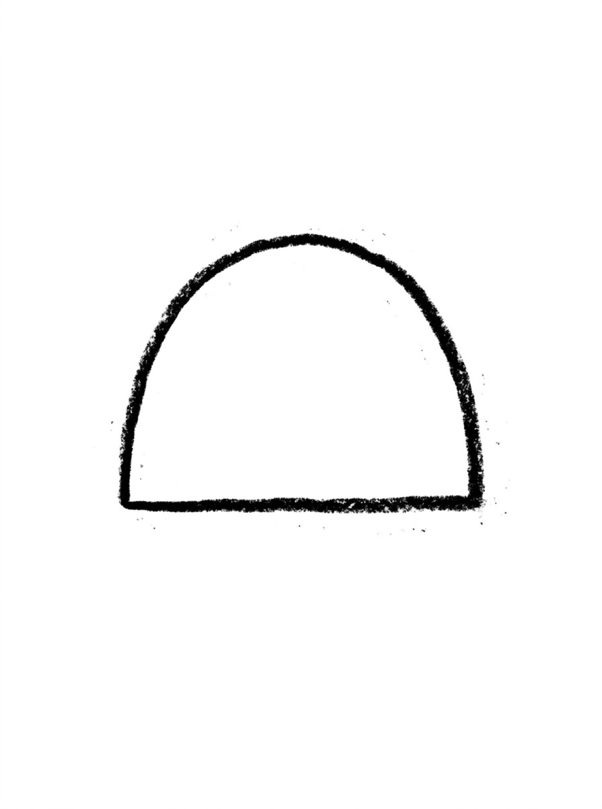
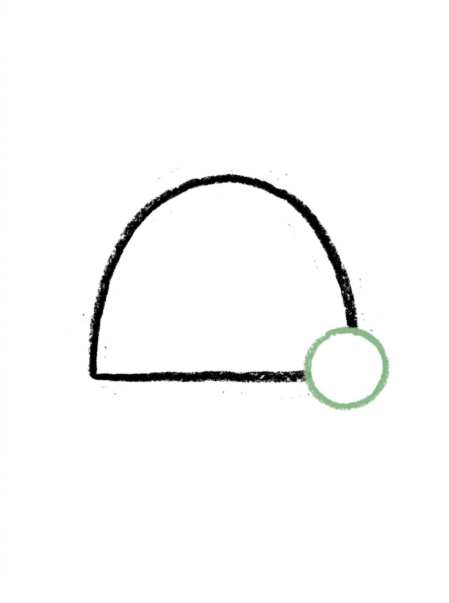
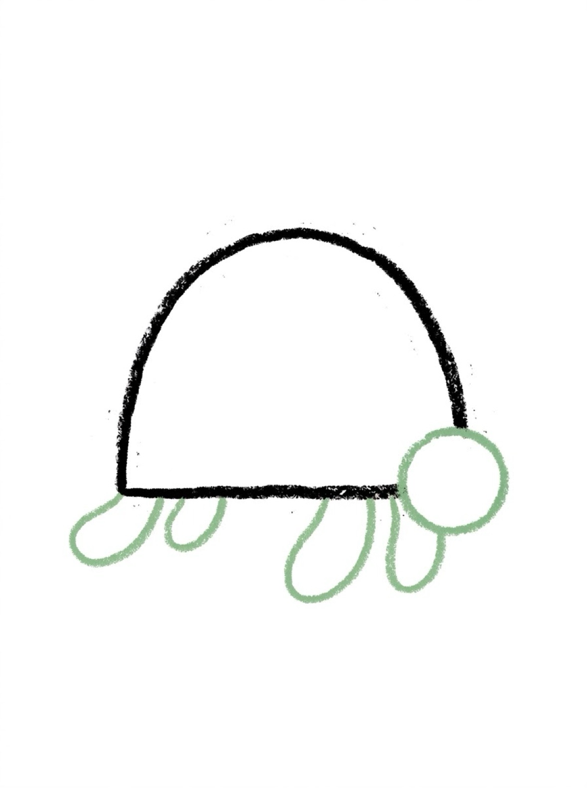
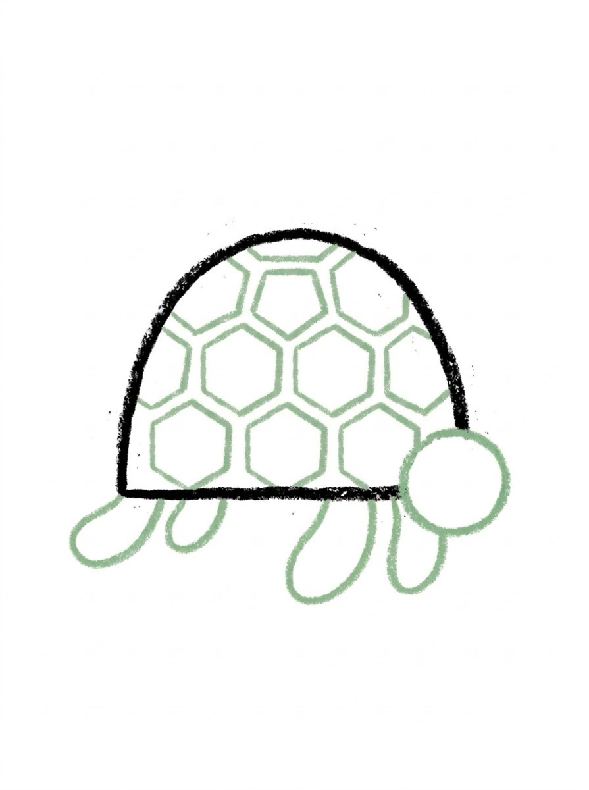

Turtle Drawing for Kids How to Draw a Turtle in 6 Easy Steps
Quick Answer
This free step-by-step tutorial shows kids how to draw a turtle in six easy steps: an oval shell, a head, four flippers, a shell pattern, a smiley face, and color. Download the printable PDF, grab crayons, and follow along together. Made for ages 4 and up — no signup needed, just print and draw.
At a Glance
- Subject: How to draw a turtle
- Ages: 3+
- Steps: 6 steps
- Time: ~15 min
- Difficulty: Easy
- Supplies: Paper, crayons
Turtles are the friendliest drawing subject — nothing about a turtle needs to be perfect. A lumpy oval shell and a poking-out head already read as 'turtle' to every kid on earth. Slow and steady wins the drawing race.
✏️ How to Draw a Turtle: Step by Step
One step per box — draw each new part in a different color so kids can see exactly what changed.
Step 1: The Shell

Draw a big dome shape — like half an oval or an upside-down bowl. This is the turtle's shell.
Step 2: The Head

Draw a small circle poking out from the front of the shell for the head.
Step 3: The Flippers

Draw four rounded flippers — two at the front, two at the back — like little paddles.
Step 4: The Shell Pattern

Draw hexagon or pentagon shapes inside the shell, like a honeycomb pattern.
Step 5: The Face
Give your turtle two dot eyes and a sweet little smile.
Step 6: Color It In

Color the shell green with a lighter belly — or make a rainbow turtle!
📊 Turtle Drawing by Age
Every age can join in — just adjust the job.
| Age | What they can do | Tip |
|---|---|---|
| 3–4 | Trace the dome shell and color it in | Skip the hexagon pattern — just let them color the shell |
| 4–5 | Draw shell, head, and flippers with help | The pattern can be simple squares if hexagons are hard |
| 6+ | Draw the whole turtle solo | Challenge: draw the turtle swimming with wavy water lines |
🖨️ Download Your Free Turtle Drawing Printable
The printable lays out all 6 steps one per box, big enough for little hands — kids draw right alongside each step.
⬇️ Open Free Printable 🖨️ Print🎁 Free printable for ages 3+
🐢 Turtle Race to the Pond
Draw two turtles side by side — one with a plain shell, one with a wild pattern (stars, zigzags, polka dots). Race them across the page with a crayon 'track.' The pattern step is where kids' imaginations take over, so let it run wild.
🐢 Turtles in the Real World
A turtle's shell is not a house it can leave — it is part of the turtle's skeleton, grown from its ribs and backbone. That is why a turtle can never climb out of its shell the way cartoon turtles do. When a turtle pulls its head and legs in, the shell becomes a living shield, hard enough to shrug off most predators.
Turtles are some of the longest-lived animals on Earth: many species live past fifty, and giant tortoises can pass one hundred and fifty. Sea turtles swim whole oceans and navigate back to the beach where they hatched; land turtles and tortoises amble. Ask your child which kind theirs is — the answer decides whether the background needs waves or grass.
What You'll Need to Draw a Turtle
Green is the star here — grab two shades if you have them (a light green for the body, darker for the shell pattern). Black or dark brown works for the outlines. The hexagon shell pattern needs a steady hand, so thicker crayons help younger kids. Any paper works, but the rainbow shell option in step 6 really pops on white.
What They're Learning
The dome-shaped shell introduces curved lines that aren't full circles — a new challenge after basic shapes. The hexagon pattern inside the shell practices repeating the same shape multiple times, which builds consistency and patience. Drawing four legs plus a head and tail around the shell also works on spatial planning: everything has to fit.
Make It Yours
Try a sea turtle vs a land tortoise — flippers instead of stubby legs, and a smoother shell. Kids can draw an underwater scene with fish and seaweed around their turtle, or give it a patterned shell using dots, stripes, or zigzags instead of hexagons. A mama turtle with two tiny babies is always a hit.
🛒 Our Favorite Drawing Supplies
These are the supplies we reach for in our own home — washable (because kids), quality paper, and enough colors to avoid fights.
As an Amazon Associate, MomYouNeedThis earns from qualifying purchases — at no extra cost to you.
❓ Turtle Drawing FAQs
What is the easiest way for a kid to draw a turtle?
Draw a dome shape for the shell and poke a small circle out the front for the head. Add four paddle flippers, a honeycomb pattern on the shell, and a smiley face. Domes and circles — that's the whole turtle.
What age can kids start learning to draw a turtle?
Most kids can draw the dome shell and head around age 4 with help, and the full turtle solo by 5 or 6. The shell pattern is the trickiest part — younger kids can skip it and just color.
What supplies do we need to draw a turtle?
Paper and crayons or markers — greens of course. The free printable PDF lays out all six steps one per box so kids can draw right alongside each step.
Is the turtle drawing printable really free?
Yes — every printable on MomYouNeedThis is 100% free to download and print. No signup, no payment, just tap the download button.
What is the easiest turtle drawing for kids?
The one on this page, because the very first step is the whole shell — one big dome — and every step after that is a small addition around it. Most 5-year-olds finish it solo; a 3-year-old can trace the dome, add a head, and color while a grown-up helps with the legs.
How do I print the turtle drawing tutorial?
Open the PDF and print at 100% scale (not 'fit to page') so the drawing boxes stay big enough for little hands. The printable is designed to stay large — never shrunk to force a fit.
How does a turtle drawing step by step tutorial work?
Each of the six pictures shows the turtle so far, with the newest part drawn in a fresh color. Your child copies just the colored part, checks it against the picture, and moves on — the guesswork about what to draw next is gone.
📚 Keep Exploring
- ✏️ All 76 Drawing Tutorials 76 free step-by-step drawing tutorials for kids.
- 🐾 Animal Coloring Free printable animal coloring pages for little learners.
- ✏️ Drawing Practice Free printable drawing pre-writing worksheet for toddlers.